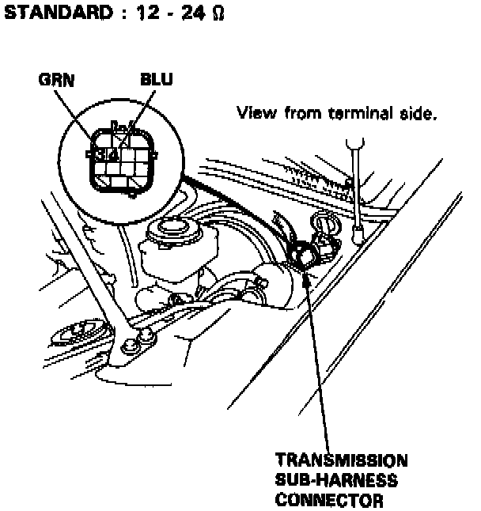
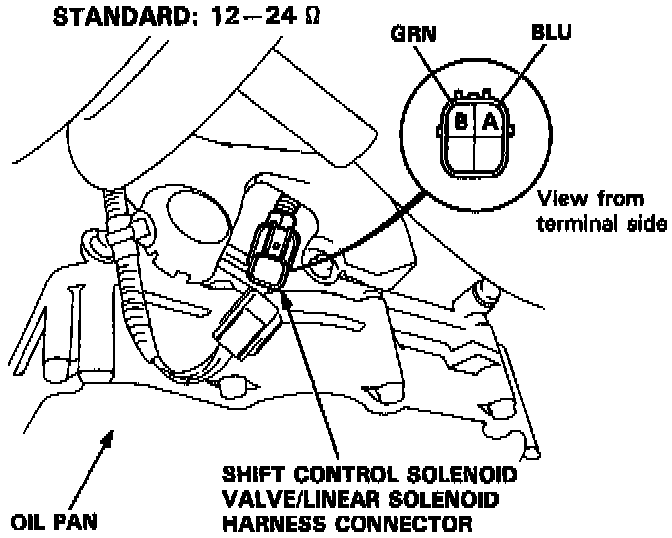

Shift Control Solenoid Valve A/B
NOTE: Shift control solenoid valves A and B must be removed/replaced as an assembly.1. Disconnect the transmission sub-harness connector.

2. Measure the resistance between the No.3 terminal of the transmission sub-harness and body ground and between the No.4 terminal and body ground.
3. If the resistance is out of specification, disconnect the transmission sub-harness from the shift control solenoid valve/linear solenoid harness connector.

4. Measure the resistance between the A terminal of the shift control solenoid valve/linear solenoid harness connector and body ground and between the B terminal and body ground.
5. Replace the transmission sub-harness if the resistance is within specification.
6. Replace the shift control solenoid valve assembly if the resistance is out of specification.
7. If the resistance is within the standard, connect the A terminal of the shift control solenoid valve/linear solenoid harness connector to the battery positive terminal. A clicking sound should be heard. Connect the B terminal to the battery positive terminal. A clicking sound should be heard. Replace the shift control solenoid valve assembly if no clicking sound is heard.
NOTE: If solenoid valve replacement is required, see Lower Valve Body Assembly Removal/Installation, Lower Valve Body Assembly Disassembly/Reassemble and Shift Control Solenoid Valve Replacement.